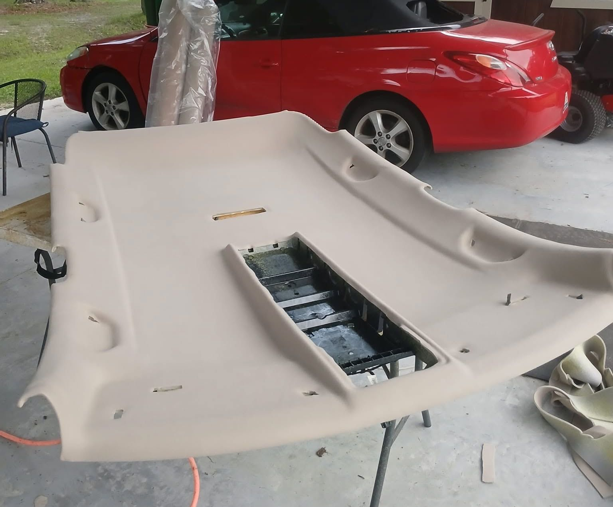
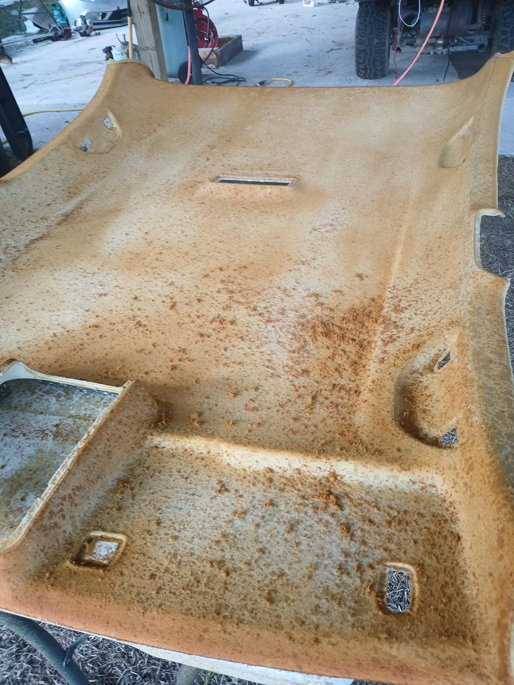
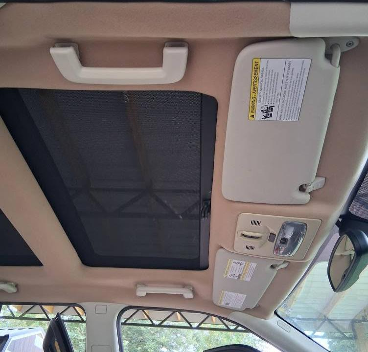
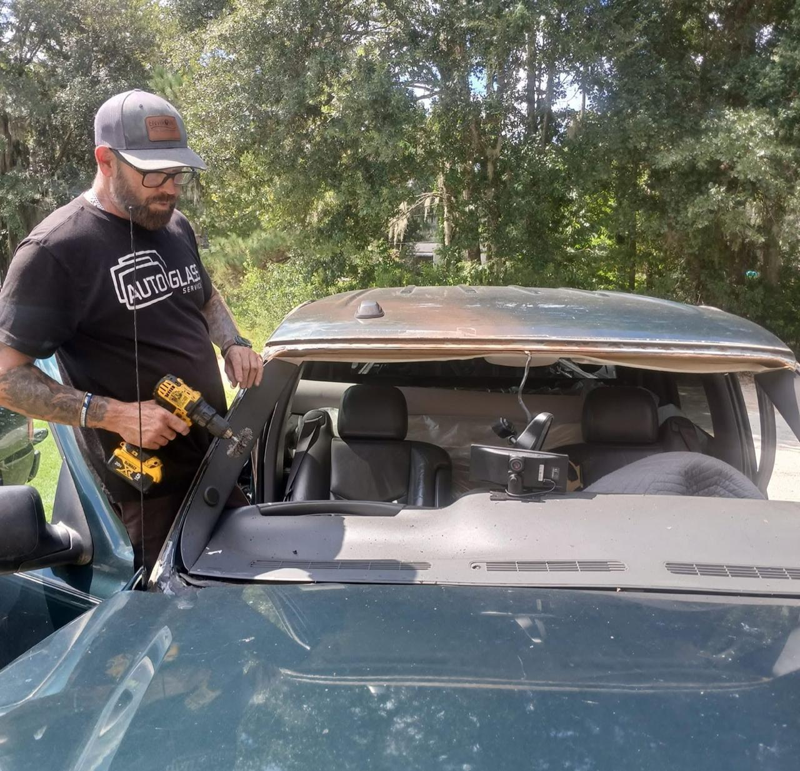
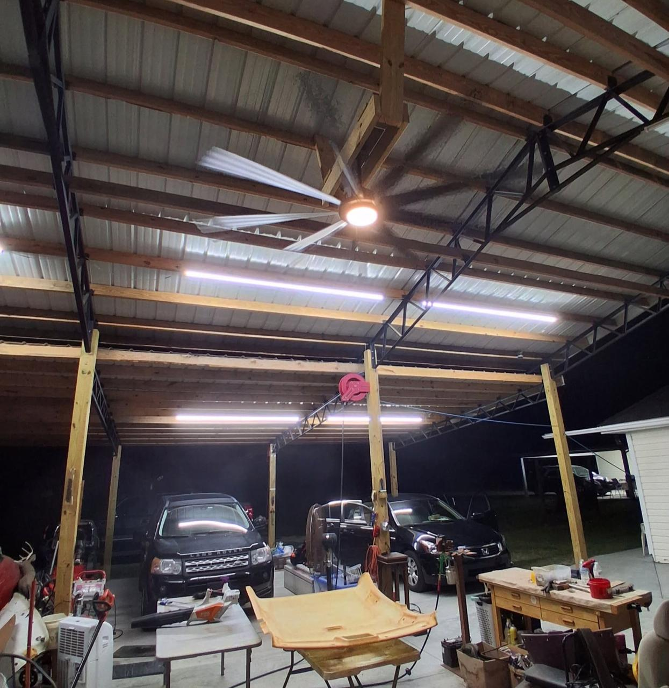
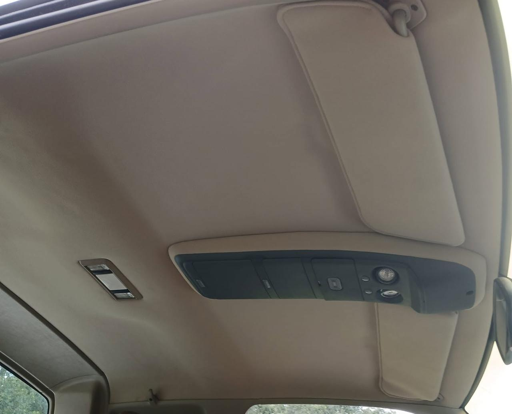
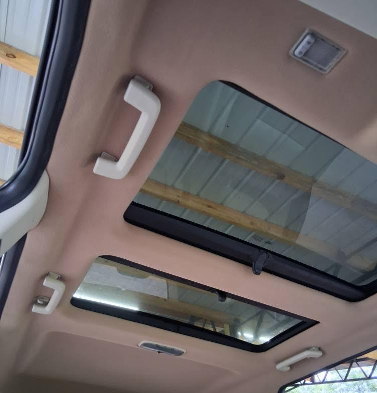
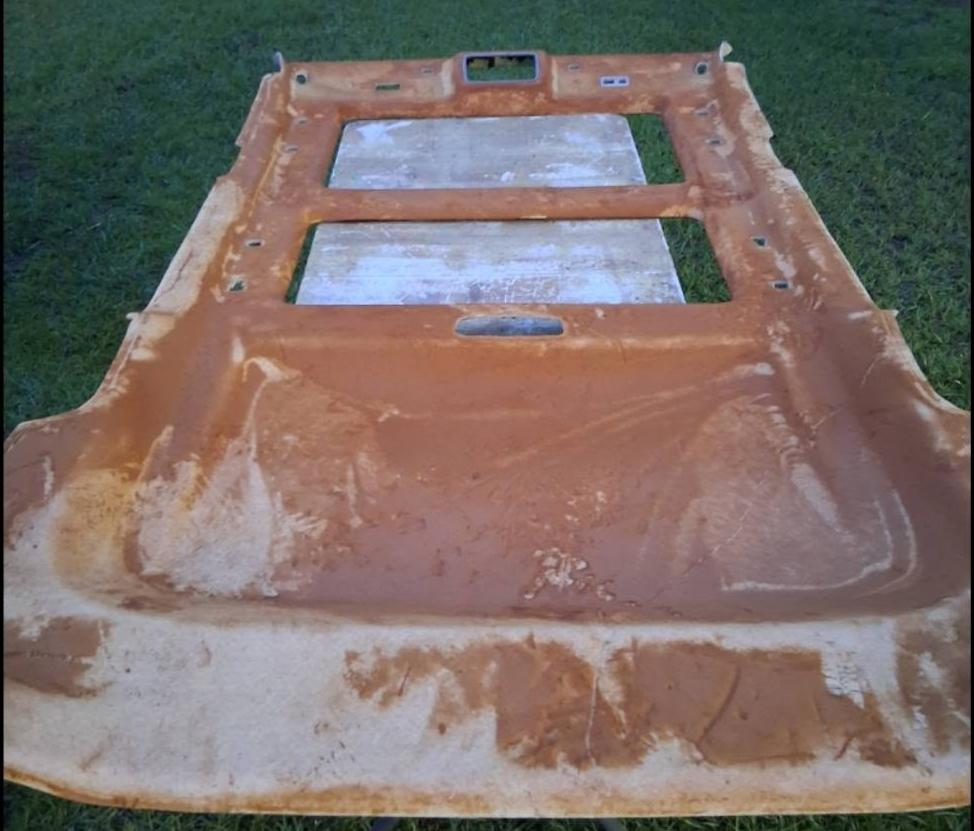

Headliner Installation
Fresh foam-backed fabric and careful fitment for a clean, finished ceiling.
Request a quoteWhat we do
Headliners are our specialty. We also offer select sunroof and interior roof-light services to help your vehicle feel complete again.
Services

Fresh foam-backed fabric and careful fitment for a clean, finished ceiling.
Request a quote
For sagging, stained or detached material, we’ll assess the right repair or replacement path.
Describe your vehicle
ASI-trained service for select makes and models. Call first to confirm your vehicle.
Call to confirm
Interior ceiling light installation and replacement for a brighter, more comfortable cabin.
Ask about interior lightsReal work by Andy
Drag the handle to compare the original condition and the completed interior in photos from Andy’s projects.
From stripped board to new material, prepared and fitted with care.
A sagging ceiling replaced with a neat, even finish.




A clear first step
Send the year, make, model and a few photos if you have them. We’ll help you understand the next step before work begins.
Start Your Request